Vortices in superfluid
Introduction
Superfluidity is a property of flowing without friction. Everyday experience tells us that motion of an ordinary fluid (say, water at room temperature) is always accompanied by viscous dissipation of energy, so that the flow gradually becomes slower unless it is maintained by external forces. In contrast, superfluid exhibits no loss of kinetic energy: once excited the motion of superfluid can continue indefinitely. Superfluidity was originally discovered experimentally in liquid helium.
We study properties of superfluid helium at zero temperature. It will be treated as an incompressible fluid with density . Flow continuity (the fact that the mass flowing into and the mass flowing out of a given infinitesimal volume are equal) implies that the flux of helium velocity through a closed surface is always zero. Superfluid velocity in this aspect is analogous to the magnetic field intensity. By analogy with the magnetic field lines, “streamlines” are tangential to the fluid velocity at each point and their density is proportional to its magnitude.
True superflow has an important property of being irrotational: circulation of superfluid velocity along any closed path within helium is zero
\oint_L \vec{v} \cdot d\vec{l} = 0 \tag{1}
This statement must be amended if superfluidity is absent along a thin “vortex filament”. The thickness of the filament itself is of approximately atomic dimensions , but the vortex induces long range velocity field in surrounding superfluid: velocity circulation around such filament is the circulation quantum1
\left| \oint_L \vec{v} \cdot d\vec{l} \right| = 2\pi\kappa, \tag{2}
and zero if the path can be contracted to a single point without crossing the vortex, see Fig. 1. This supports the analogy between superflow and the magnetic field created by wires carrying current: superposition of two valid velocity distributions is a valid velocity distribution and the velocity at any point is equal (up to a dimensional factor) to the magnetic field produced by the unit currents running through a system of wires representing vortex filaments.
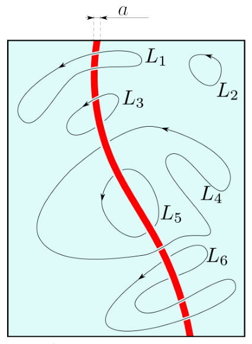
Fig. 1: Vortex filament (red) in superfluid (light blue). Velocity circulations along paths , , , and are all zero, but those for and are equal to . Note that circulations along and have opposite signs.Part A. Steady filament (0.75 points)
Consider a cylindrical beaker (radius ) of superfluid helium and a straight vertical vortex filament in its center Fig. 2.
A.1 (0.25pt) Plot the streamlines. Find out the velocity at a point .
A.2 (0.5pt) Work out the free surface shape (height as a function of coordinate ) around the vortex. Free fall acceleration is . Surface tension can be neglected.
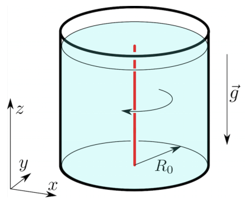
Fig. 2: Straight vortex along the axis of a beaker.Part B. Vortex motion (1.4 points)
Free vortices move about in space with the flow2. In other words each element of the filament moves with the velocity of the fluid at the position of that element.
As an example, consider a pair of counter-rotating straight vortices placed initially at distance from each other, see Fig. 3. Each vortex produces velocity at the axis of another. As a result, the vortex pair moves rectilinearly with constant speed so that the distance between them remains unchanged.
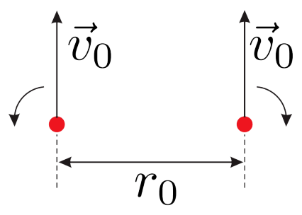
Fig. 3: Parallel vortex filaments with opposite circulations.B.1 (0.25pt) Consider two identical straight vortices initially placed at distance from each other as shown in Fig. 4. Find initial velocities of the vortices and draw their trajectories.
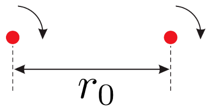
Fig. 4: Parallel vortex filaments with equal circulations.A beaker of helium (see Part A) is filled with triangular lattice () of identical vertical vortices, see Fig. 5.
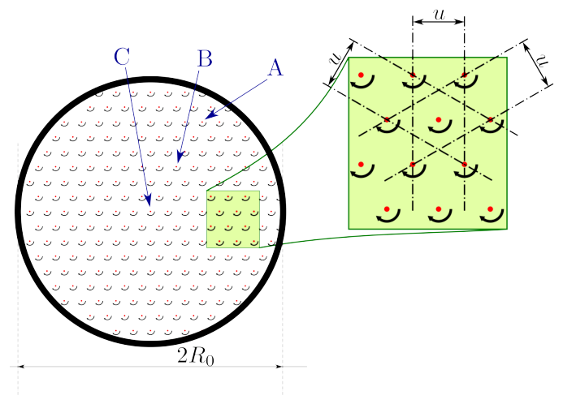
Fig. 5: Triangular lattice of vortices in a beaker. The view from above.B.2 (0.15pt) Draw the trajectories of vortices A, B, and C (located in the center).
B.3 (0.4pt) Find velocity of a vortex positioned at .
B.4 (0.35pt) Find the distance between the vortices A and B at time . Treat as given.
B.5 (0.25pt) Work out the “smoothed out” (omitting the lattice structure) free helium surface shape .
Part C. Momentum and energy (1.75 points)
The long range velocity field is the major contribution to the energy of a system of vortices, it is insensitive to exact structure of the filament. The filament itself can not be properly described by the macroscopic theory and apparent singularities (infinities) are insignificant. Real physical quantities, such as the energy, of the region inside a thin tube of radius around the filament should be neglected. Outside of this tube the density of superflow kinetic energy (where ) is analogous to the energy density of the magnetic field — they are both quadratic in respective variables. This analogy together with the correspondence between magnetic field and superfluid velocity generated by vortices (currents) facilitates calculation of the flow energy for a given system. For instance, given the inductance of a circular wire loop , where is the loop radius and is wire radius, we get the superfluid vortex loop energy3
U \approx 2R\rho\pi^2\kappa^2 \log(R/a) \tag{3}
Total fluid momentum is also determined by the long range velocity distribution. It is obtained by integration of the momentum density . Again, consider a flow generated by a circular vortex loop placed in plane. It is obvious from the symmetry considerations, that total momentum has only component:
P = \int \rho v_z \, dV = \rho \int\!\!\int \underbrace{\left( \int v_z \, dz \right)}_{q(x,y)} dx\, dy \tag{4}
The innermost integration is in fact an integration along appropriate paths parallel to -axis, see Fig. 6. From the circulation identity (2) it follows that
q(x, y) = \int_{L(x,y)} \vec{v} \cdot d\vec{l} \tag{5}
is piecewise constant. Particularly, it is zero for paths passing outside the ring and for paths inside it. Total momentum is therefore
P = \rho \cdot \pi R^2 \cdot 2\pi\kappa = 2\pi^2\rho R^2\kappa \tag{6}
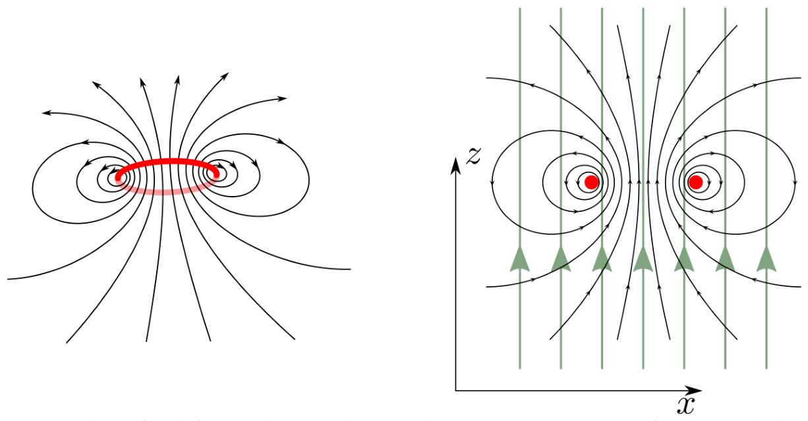
Fig. 6: Velocity field of a circular vortex loop and integration paths (green) for calculation.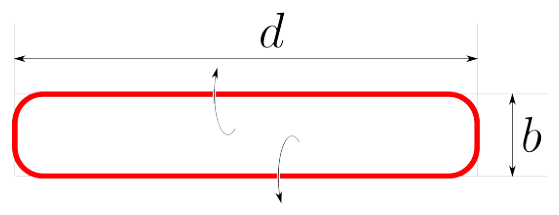
Fig. 7: A nearly rectangular vortex loop, .C.1 (0.3pt) Consider a nearly rectangular vortex loop , , Fig. 7. Indicate the direction of its momentum . Find out the momentum magnitude.
C.2 (0.7pt) Calculate its energy .
C.3 (0.75pt) Suppose we shift a long straight vortex filament by a distance in direction, see Fig. 8. How much does the fluid momentum change? Indicate the momentum change direction. The filament length (constrained by the vessel walls) is .
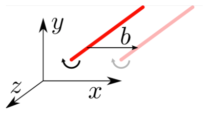
Fig. 8: Momentum changes whenever the vortex shifts with respect to the fluid.Part D. Trapped charges (2.85 points)
Electrons, if injected in helium, get trapped in the vortex filaments. Here and below polarizability of helium can be neglected ().
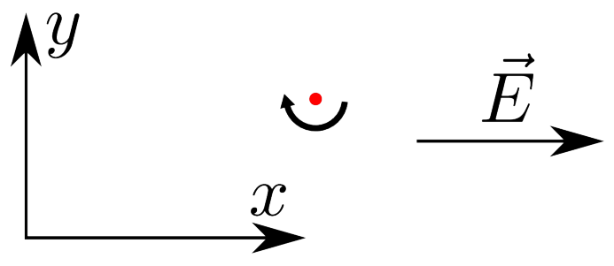
Fig. 9: Straight vortex in a uniform electric field.D.1 (0.5pt) Consider a straight vortex charged with uniform linear density in a uniform electric field . Draw the vortex trajectory. Find its velocity as a function of time.
A circular vortex loop of radius initially charged with uniform linear density is placed in a uniform electric field perpendicular to its plane, opposite to its momentum .
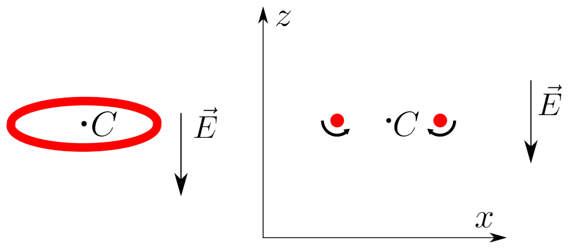
Figure 10: (left) Vortex ring in a uniform electric field. (right) Cross section of the ring.D.2 (0.6pt) Draw the trajectory of the loop center . Find the radius of the loop as a function of time.
D.3 (1.5pt) Find its velocity as a function of time.
D.4 (0.25pt) The field is switched off at a time when the velocity reaches the value . Find the loop velocity at a later time .
Part E. Influence of the boundaries (3.25 points)
Solid walls alter the velocity field created by a vortex filament, because the fluid cannot flow through them. Mathematically this means that the wall-normal velocity component vanishes at the wall surface.
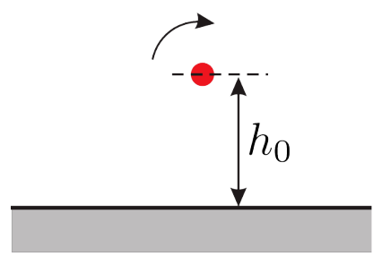
Fig. 11: Straight vortex filament near a flat wall.E.1 (0.5pt) Draw the trajectory of a straight vortex, initially placed at a distance from a flat wall. Find its velocity as a function of time.
Consider a straight vortex placed in a corner at a distance from both walls.
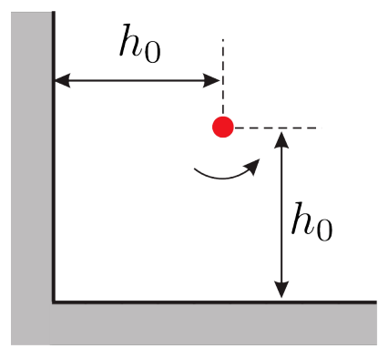
Fig. 12: Straight vortex filament in a corner.E.2 (0.75pt) What is the initial velocity of the vortex?
E.3 (0.5pt) Draw the trajectory of the vortex.
E.4 (1.5pt) What is the velocity of the vortex after very long time?
Fonte: Testo (PDF) — p.1
Topic: Fluid Mechanics, Modern-Quantum Physics Metodi: Continuity Equation, Symmetry Argument, Superposition Principle, Calculus-Integration Competenze: Physical Reasoning, Diagrammatic Reasoning Objects: Container, Electron
Vortici in superfluido
Introduzione
La superfluidità è una proprietà del flusso senza attrito. L’esperienza quotidiana ci dice che il movimento di un fluido ordinario (ad esempio, l’acqua a temperatura ambiente) è sempre accompagnato da una dissipazione viscosa dell’energia, in modo che il flusso diventa gradualmente più lento a meno che non venga mantenuto da forze esterne. Al contrario, il superfluido non presenta alcuna perdita di energia cinetica: una volta eccitato il movimento del superfluido può continuare indefinitamente. La superfluidità fu originariamente scoperta sperimentalmente nell’elio liquido.
Studiamo le proprietà dell’elio superfluido a temperatura zero. Sarà trattato come un fluido incompressibile con densità . La continuità di flusso (il fatto che la massa che entra e la massa che esce da un determinato volume infinitesimale siano uguali) implica che il flusso di velocità dell’elio attraverso una superficie chiusa è sempre zero. La velocità dei superfluidi in questo aspetto è analoga all’intensità del campo magnetico. Per analogia con le linee del campo magnetico, le “linee di corrente” sono tangenziali alla velocità del fluido a ogni punto e la loro densità è proporzionale alla sua grandezza.
Il vero superflow ha una proprietà importante di irrotazione: la circolazione della velocità superfluida lungo qualsiasi percorso chiuso all’interno dell’elio è zero
\oint_L \vec{v} \cdot d\vec{l} = 0 \tag{1}
Questa dichiarazione deve essere modificata se non vi è superfluidità lungo un sottile “filamento vortice”. Lo spessore del filamento stesso è di dimensioni atomiche circa , ma il vortice induce un campo di velocità a lungo raggio nel superfluido circostante: la circolazione di velocità intorno a tale filamento è il quantum di circolazione1
\left| \oint_L \vec{v} \cdot d\vec{l} \right| = 2\pi\kappa, \tag{2}
e zero se il percorso può essere contratto a un singolo punto senza attraversare il vortice, vedere figura. 1. Ciò supporta l’analogia tra superflow e campo magnetico creato da fili che trasportano corrente: la sovrapposizione di due distribuzioni di velocità valide è una distribuzione di velocità valida e la velocità in qualsiasi punto è uguale (fino a un fattore dimensionale) al campo magnetico prodotto dalle correnti unitarie che attraversano un sistema di fili che rappresentano filamenti di vortice.
Fig. 1: Filamento vortice (rosso) in superfluido (blu chiaro). Le velocità di circolazione lungo i percorsi , , e sono tutte zero, ma quelle per e sono uguali a . Si noti che le circolazioni lungo e presentano segni opposti.
Parte A. Filamento stabile (0,75 punti)
Si consideri un bicchiere cilindrico (radio ) di elio superfluido e un filamento verticale verticale retto nel suo centro Fig. 2.
**A.1 ** *(0.25pt) * Tracciare le linee correnti. Scopri la velocità in un punto .
A.2 *(0,5pt) * Calcolare la forma della superficie libera (altezza in funzione delle coordinate ) attorno al vortice. Accelerazione di caduta libera è . La tensione superficiale può essere trascurata.
Fig. 2: Vortice diretto lungo l’asse di un bicchiere.
Parte B. Movimento del vortice (1,4 punti)
I vortici liberi si muovono nello spazio con il flusso 2. In altre parole, ogni elemento del filamento si muove con la velocità del fluido nella posizione di tale elemento.
Ad esempio, si consideri un paio di vortici retti che ruotano contro di loro e sono posizionati inizialmente a distanza l’uno dall’altro, vedere figura. 3. Ogni vortice produce velocità all’asse di un altro. Di conseguenza, la coppia di vortici si muove rettolineare con velocità costante in modo che la distanza tra di loro rimanga invariata.
Fig. 3: Filamenti di vortice paralleli con circolazioni opposte.
B.1 *(0.25pt) * Considerate due vortici retti identici inizialmente posizionati a distanza tra loro come mostrato nella figura. 4. Trova le velocità iniziali dei vortici e disegna le loro traiettorie.
Fig. 4: Filamenti di vortice paralleli con circulazioni uguali.
Un calice di elio (vedere parte A) è riempito di reticola triangolare () di vortici verticali identici, vedere figura. 5.
Fig. 5: Rete triangolare di vortici in una tazza. La vista dall’alto.
**B.2 ** *(0.15pt) * Disegna le traiettorie dei vortici A, B e C (situati al centro).
**B.3 ** *(0,4pt) * Trova la velocità di un vortice posizionato a .
B.4 *(0.35pt) * Trova la distanza tra i vortici A e B al tempo . Trattare come indicato.
**B.5 ** *(0.25pt) * Lavorare la forma della superficie di elio libero “allentata” (omissione della struttura della griglia) .
Parte C. Impulso e energia (1,75 punti)
Il campo di velocità a lungo raggio è il contributo principale all’energia di un sistema di vortici, è insensibile alla struttura esatta del filamento. Il filamento stesso non può essere descritto correttamente dalla teoria macroscopica e le apparenti singolarità (infinità) sono insignificanti. Le quantità fisiche reali, come l’energia, della regione all’interno di un tubo sottile di raggio intorno al filamento devono essere trascurate. Al di fuori di questo tubo la densità di energia cinetica superfluo (dove ) è analoga alla densità di energia del campo magnetico entrambi sono quadratici nelle rispettive variabili. Questa analogia, insieme alla corrispondenza tra campo magnetico e velocità superfluida generata da vortici (torenti), facilita il calcolo dell’energia di flusso per un dato sistema. Ad esempio, data l’induzione di un ciclo di filo circolare , dove è il raggio del ciclo e è il raggio del filo, otteniamo l’energia del ciclo di vortice superfluido3
U \approx 2R\rho\pi^2\kappa^2 \log(R/a) \tag{3}
Il momento totale del fluido è determinato anche dalla distribuzione della velocità a lungo raggio. Si ottiene integrando la densità di impulso . Ancora una volta, consideriamo un flusso generato da un ciclo di vortice circolare posizionato in piano . Dalle considerazioni di simmetria è evidente che la dinamica totale ha solo :
P = \int \rho v_z \, dV = \rho \int\!\!\int \underbrace{\left( \int v_z \, dz \right)}_{q(x,y)} dx\, dy \tag{4}
L’integrazione più profonda è infatti un’integrazione lungo percorsi appropriati paralleli all’asse , vedi Figura. 6. Dall’identità di circolazione (2) si deduce che
q(x, y) = \int_{L(x,y)} \vec{v} \cdot d\vec{l} \tag{5}
è costante a pezzi. In particolare, è zero per i percorsi che passano al di fuori dell’anello e per i percorsi all’interno. L’impulso totale è quindi
P = \rho \cdot \pi R^2 \cdot 2\pi\kappa = 2\pi^2\rho R^2\kappa \tag{6}
Fig. 6: Campo di velocità di un ciclo di vortice circolare e percorsi di integrazione (verde) per il calcolo .
Fig. 7: Un ciclo di vortice quasi rettangolare, .
**C.1 ** *(0.3pt) * Considera un ciclo di vortice quasi rettangolare , , Figura. 7. Indicare la direzione della sua dinamica . Scopri la grandezza dell’impulso.
**C.2 ** *(0,7pt) * Calcolare la sua energia .
**C.3 ** *(0.75pt) * Supponiamo di spostare un lungo filamento di vortice retto di una distanza nella direzione , vedi Figura. 8. Quanto cambia il momento del fluido? Indicare la direzione di cambiamento di impulso. La lunghezza del filamento (constretta dalle pareti del recipiente) è .
Fig. 8: Il momento cambia ogni volta che il vortice si sposta rispetto al fluido.
Parte D. Cargos intrappolati (2,85 punti)
Gli elettroni, se iniettati in elio, rimangono intrappolati nei filamenti del vortice. Qui e sotto la polarizzazione dell’elio può essere trascurata ().
Fig. 9: Vortice diretto in un campo elettrico uniforme.
**D.1 ** *(0,5pt) * Considera un vortice retto caricato con densità lineare uniforme in un campo elettrico uniforme . Disegna la traiettoria del vortice. Trova la sua velocità come funzione del tempo.
Un ciclo di vortice circolare di raggio inizialmente carico di densità lineare uniforme è collocato in un campo elettrico uniforme perpendicolare al suo piano, opposto al suo impulso .
Figura 10: (a sinistra) Anello di vortice in un campo elettrico uniforme. (a destra) Sezione incrociata dell’anello.*
D.2 *(0.6pt) * Tracciare la traiettoria del centro del ciclo . Trova il raggio del ciclo come funzione del tempo.
**D.3 ** *(1.5pt) * Trova la sua velocità come funzione del tempo.
D.4 (0.25pt) Il campo viene spento al momento quando la velocità raggiunge il valore . Trova la velocità del ciclo in un momento successivo .
Parte E. Influenza dei confini (3,25 punti)
Le pareti solide alterano il campo di velocità creato da un filamento vortice, perché il fluido non può fluire attraverso di esse. Matematicamente questo significa che la componente della velocità normale della parete scompare alla superficie della parete.
Fig. 11: Filamento di vortice diretto vicino a una parete piatta.
**E.1 ** *(0.5pt) * Disegnare la traiettoria di un vortice retto, inizialmente posizionato a una distanza da una parete piatta. Trova la sua velocità come funzione del tempo.
Considerate un vortice retto posizionato in un angolo a una distanza da entrambe le pareti.
Fig. 12: Filamento di vortice diretto in un angolo.
**E.2 ** *(0.75pt) * Qual è la velocità iniziale del vortice?
**E.3 ** *(0.5pt) * Disegna la traiettoria del vortice.
**E.4 ** *(1.5pt) * Qual è la velocità del vortice dopo molto tempo?
Fonte: Testo (PDF) — p.1
Topic: Fluid Mechanics, Modern-Quantum Physics Metodi: Continuity Equation, Symmetry Argument, Superposition Principle, Calculus-Integration Competenze: Physical Reasoning, Diagrammatic Reasoning Objects: Container, Electron